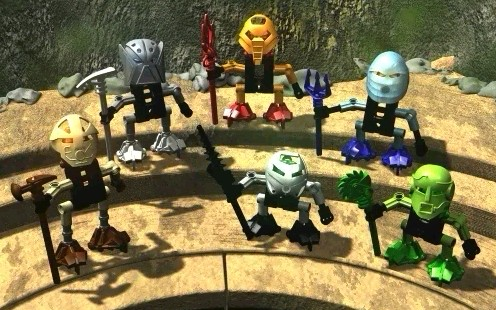
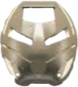

The wise authority
The Turaga are wise beings that can be considered the so called leaders or elders for the Matoran. They are stronger than the Matoran, although much weaker than Toa. Being a Turaga is indeed the final phase of a Matoran's life, however nearly not all are destined to become one.
Being the rulers of Matoran villages or districts, Turaga have authority over Matoran - and even Toa. Their task is to guide both with their wisdom and experience.

The Kanohi that a Turaga wears is called a Noble Kanohi. An individuals mask transforms immediately into this form as they become a Turaga.
A Noble Kanohi is a weakened version of a Great Kanohi, thus each Noble Kanohi has a Great Kanohi counterpart. Both Toa and Matoran can wear Noble Kanohi, although the former prefer Great Kanohi because of their power and the latter aren't even able to use the Noble masks' power.
